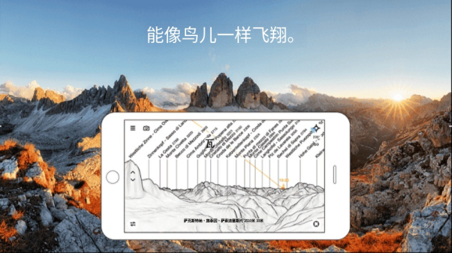

PeakFinder 避坑指南——登顶才发现山没名字怎么办
用 PeakFinder 认峰看着简单，GPS 一开全景就标满山名；但实际登山用下来有几个坑容易栽，比如山明明在那却不显示名字、换手机快照全没了、望远镜唤不出来。本文用三次踩坑的经历告诉你哪里容易翻车、为什么会这样、怎么提前避开。
先说好：PeakFinder 是什么
PeakFinder 是个认峰软件，去peakfinder官网就能看到介绍——打开 GPS 和罗盘，对着远方的山脉，它会在屏幕上把每一座山的名字直接标出来。登山的时候登顶一圈 360°，以前只能凭经验认的山头，现在对着手机一转就全有名字了。行前规划也能用——选好视点位置，提前预览视野里能看到哪些山，拍下来当行程参考。
但看着简单，我实际用了几次（两次单日徒步、一次周末露营）还是踩了几个坑。有些坑当场能救回来，有些只能自认倒霉。写下来给同样用 PeakFinder 的朋友参考，省得跟我一样踩过才知道。
坑一：眼前这座山，名字就是不出来
症状：登顶之后兴奋地掏出手机，对着全景看——最显眼的那座山，旁边居然没有名字标注。我当时以为 GPS 信号飘了，重启软件、关掉重开，来回折腾十分钟还是那副样子。
后来才慢慢弄明白，软件不是坏了，是有几个硬限制在那卡着。
原因分四种情况：
最常见的是被前面的山挡住了。PeakFinder 用高程模型自动判断遮挡关系——近山挡住了山头，那座山就不会出现在全景渲染里，自然也没有名字。这个逻辑是对的，但你站在山顶平视的时候，以为那座山就在你对面，实际上你的视点高度还没越过中间那排山的山脊。
第二是超出渲染半径。PeakFinder 的全景覆盖范围大约三百公里，超出就不渲染了。我那次在川西，远处有座自认为"肯定能看到"的山，算一下直线距离超了三百公里，软件根本不管。罗盘再准、GPS 再精确也没用。
第三是山峰目录里还没有。PeakFinder 的山峰数据来自 OpenStreetMap——这是个"地图维基百科"，任何人都可以往里面加山峰信息。如果那座山 OSM 里没被收录，PeakFinder 也不会凭空给它安个名字。特别小众的山、或者刚被测绘过的新山峰，经常出现这种情况。
第四是离线区域没下好。特别偏远的山区，基础高程模型本身精度就不够，不把对应的离线区域补上，渲染出来的地形轮廓会有偏差。
解法：按顺序来。先用纵向飞行把视点升高，看看那座山露出来没有——露出来就是遮挡问题，调视点高度就行。还没露？选个离它更近的视点飞过去再渲染，排除半径限制。再不行？去设置里拉一下更新，OSM 里二十四小时内新增的山峰就能同步进来。最后确认一下离线区域是不是覆盖了你所在的那块山区。
防漏山峰排查顺序：升高视点 → 飞近重渲染 → 更新目录 → 下离线区域坑二：快照拍了一堆，换手机全没了
症状：去年年底换手机，旧手机上存了二十多张登顶时拍的全景快照——带山名标注的那种，特别有纪念意义。换机的时候只迁移了 App，打开 PeakFinder 新设备上干干净净，一张快照都不剩。
原因：PeakFinder 的快照是纯本地存储，没有任何云同步或账号绑定。拍的时候没提醒，导出到图库也是个可选操作，默认就是存在 App 自己的数据目录里。我之前以为换手机登录同一个账号就能自动同步，结果发现它根本没账号这回事。真要从头来过的话，安装包从官方下载拿就行——但快照数据是救不回来的。
解法只有一个：拍完就导出。编辑器底部有个导出按钮，可以直接保存到手机图库，也可以分享到微信、邮件、云盘任何地方。养成习惯——拍一张、导出一张、确认图库里有了再拍下一张。别等攒一堆，攒着攒着就忘了。
顺便说一下，快照比系统截图清晰得多——PeakFinder 会专门生成一张高分辨率全景，所有山名标注、山脊轮廓线都保留，比你按电源键+音量键截出来的清楚多了。值得花两秒导一下。
坑三：望远镜找不到入口
症状：有时候全景里名字密密麻麻，想仔细确认某个小山头具体叫什么，文档说有个"望远镜模式"可以放大。但我在界面上摸了半天，找不到入口在哪——菜单里没有、缩放键按着没反应、手势也不对。
原因很简单：望远镜的唤出方式太反直觉了——要点屏幕正中央那个圆形区域，不是随便点哪个位置都行。它在正常使用时几乎看不见，不像是个可交互的区域。我第一次知道这个触发点是翻了peakfinder文档才找到的。
解法：对着屏幕正中间戳一下就行。出来之后可以双指缩放，把周围一圈小山头的名字看得更清楚。有陀螺仪的设备上，开了 AR 相机模式之后配合望远镜用效果特别好——把望远镜对准实景里的一座山，全景线稿会跟着旋转，叠加精度能高一截。

坑四：偏远山区数据不准，以为软件坏了
症状：在一些特别偏远的地方，PeakFinder 渲染出来的地形轮廓跟实景对不上——明明是个平坦的垭口，全景里显示成了凸起；或者附近一座山被直接渲染没了。我当时跟同行的朋友吐槽这软件果然不行。
后来才知道不是软件的问题，是我没下离线区域。PeakFinder 的基础高程模型精度是全球通用的，在人口密集的地方够用，但到了偏远山区，基础数据精度就不够了。解决方案不是等软件更新，而是手动补上对应区域的离线数据包——设置里有个离线地图下载，选你要去的那块山区提前下好。
防坑清单速查
- 山没名字？按这个顺序排查：升高视点看遮挡 → 飞近排除半径 → 更新目录 → 补离线区域
- 快照一定要导出到图库或云盘，PeakFinder 不做云同步，换设备就清空
- 望远镜入口藏在屏幕正中央，别乱点，对着正中间戳一下就出来
- 去偏远山区之前，先在设置里把对应的离线区域下好，不然地形对不上会以为软件坏了
知道这些坑之后，PeakFinder 其实相当省心——GPS 信号正常的话，绝大部分情况下拿起来就能用，拍下来的带山名快照发朋友圈特别有面。我后来几次登山都按这个清单提前检查过，没再踩过同样的坑。
这套 PeakFinder 的资料和安装包我同步放在了 GitHub、Gitee 和 GitCode，国内访问哪个方便选哪个就行。